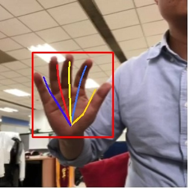

手势识别
手势识别解决方案是ModelBox提供可直接调用的API，开发者集成手势识别solution后，可以完成手势关键点的识别。检测效果如下图所示：

输入
输入类型为ModelBox::Buffer，其中包含Data与Meta两种数据，具体要求如下：
Data：图片二进制数据
Meta：无要求
输出
输出类型为ModelBox::Buffer，其中包含Data与Meta两种数据，具体如下：
Data：检测后图片，若检测到手，则画出手的框与手指连线；若未检测到手，则为原图。
Meta：
- width：图片宽度。
- height：图片高度。
- channel：图片通道数。
- pix_fmt：图片格式。
- has_hand：值判断是否有检测到手，True为检测到有手，False为未检测到手。为True才会有bboxes与hand_pose参数。
- bboxes：检测到手的box坐标。
- hand_pose：检测到手指位置坐标，每只手5根手指，每根手指3个关键点坐标。
获取方法
可以通过下面两种方式获取：
安装包下载：进入下载链接，根据系统选择对应的版本进行下载到libtorchModelBox开发镜像中，直接安装后可调用相关接口可以运行。
源码编译：进入解决方案代码仓，克隆代码仓到libtorchModelBox开发镜像中，编译
hand_pose_detection解决方案并打包，具体命令如下：git clone https://github.com/modelbox-ai/modelbox-solutions.git cd modelbox-solutions mkdir build cd build cmake .. make package -j16 hand_pose_detection编译打包完成后，将在
release目录下生成对应的安装包，安装在镜像中即可。
使用样例
C++样例
头文件
需要引入如下头文件，并在编译时链接modelbox库：
#include <modelbox/solution.h> #include <modelbox/flow.h>Solution创建初始化和启动
modelbox::Flow CreateHandPoseDetectionSolution() { ModelBoxLogger.GetLogger()->SetLogLevel modelbox::LogLevel::LOG_INFO); modelbox::Solution solution_test("hand_pose_detection"); auto flow = std::make_shared<modelbox::Flow>(); if (!flow->Init(solution_test)) { MBLOG_ERROR << "init flow failed, " << ret.WrapErrormsgs(); return nullptr; } if (!flow->Build()) { MBLOG_ERROR << "build flow failed, " << ret.WrapErrormsgs(); return nullptr; } if (!flow->RunAsync()) { MBLOG_ERROR << "flow run failed"; } MBLOG_INFO << "build hand_pose detection solution success"; }外部数据交互
待处理数据的输入，和处理完成后结果获取。
// 数据发送获取 modelbox::Status Process(std::shared_ptr<modelbox::Flow> flow, const std::string &test_file) { // 创建输入输出句柄 auto ext_data = flow->CreateExternalDataMap(); if (ext_data == nullptr) { MBLOG_ERROR << "create external data map failed."; return modelbox::STATUS_FAULT; } auto input_bufs = ext_data->CreateBufferList(); // push输入数据 if (!BuildInputData(test_file, input_bufs)) { return modelbox::STATUS_FAULT; } if (!ext_data->Send("input", input_bufs)) { MBLOG_ERROR << "send data to input failed."; return modelbox::STATUS_FAULT; } // 关闭输入 if (!ext_data->Close()) { MBLOG_ERROR << "external data close failed."; return modelbox::STATUS_FAULT; } // 获取推理结果 RecvExternalData(ext_data); }- 创建输入
modelbox::Status BuildInputData(const std::string &img_path, std::shared_ptr<modelbox::BufferList> &input_bufferlist) { FILE *pImg = fopen(img_path.c_str(), "rb"); if (pImg == nullptr) { MBLOG_ERROR << "file open failed, file path: " << img_path; return modelbox::STATUS_FAULT; } fseek(pImg, 0, SEEK_END); auto fSize = ftell(pImg); rewind(pImg); input_bufferlist->Build({(size_t)fSize}); input_bufferlist->EmplaceBack(pImg, fSize); fclose(pImg); return modelbox::STATUS_SUCCESS; }- 获取输出结果
modelbox::Status RecvExternalData(std::shared_ptr<modelbox::ExternalDataMap> ext_data) { modelbox::OutputBufferList map_buffer_list; // 接收数据 while (true) { auto status = ext_data->Recv(map_buffer_list); if (status != modelbox::STATUS_SUCCESS) { if (status == modelbox::STATUS_EOF) { // 数据处理结束 MBLOG_INFO << "stream data is EOF, stop recv output buffer"; break; } // 处理出错，关闭输出。 auto error = ext_data->GetLastError(); ext_data->Shutdown(); MBLOG_ERROR << "Recv failed, " << status << ", error:" << error->GetDesc(); break; } // 处理结果数据 auto buffer_list = map_buffer_list["output"]; ProcessOutputData(buffer_list); } return modelbox::STATUS_OK; }- 结果处理
void ProcessOutputData(std::shared_ptr<modelbox::BufferList> &output_buffer_list) { for (auto &buffer : *output_buffer_list) { bool has_hand{false}; buffer->Get("has_hand", has_hand); MBLOG_INFO << "has hand: " << has_hand; int32_t width, height; buffer->Get("height", height); buffer->Get("width", width); cv::Mat image(height, width, CV_8UC3); memcpy_s(image.data, image.total() * image.elemSize(), buffer->ConstData(), buffer->GetBytes()); cv::imwrite("path_to_save_image", image); } }资源释放
void FlowStop(std::shared_ptr<modelbox::Flow> flow) { // 结束执行 flow->Stop(); }